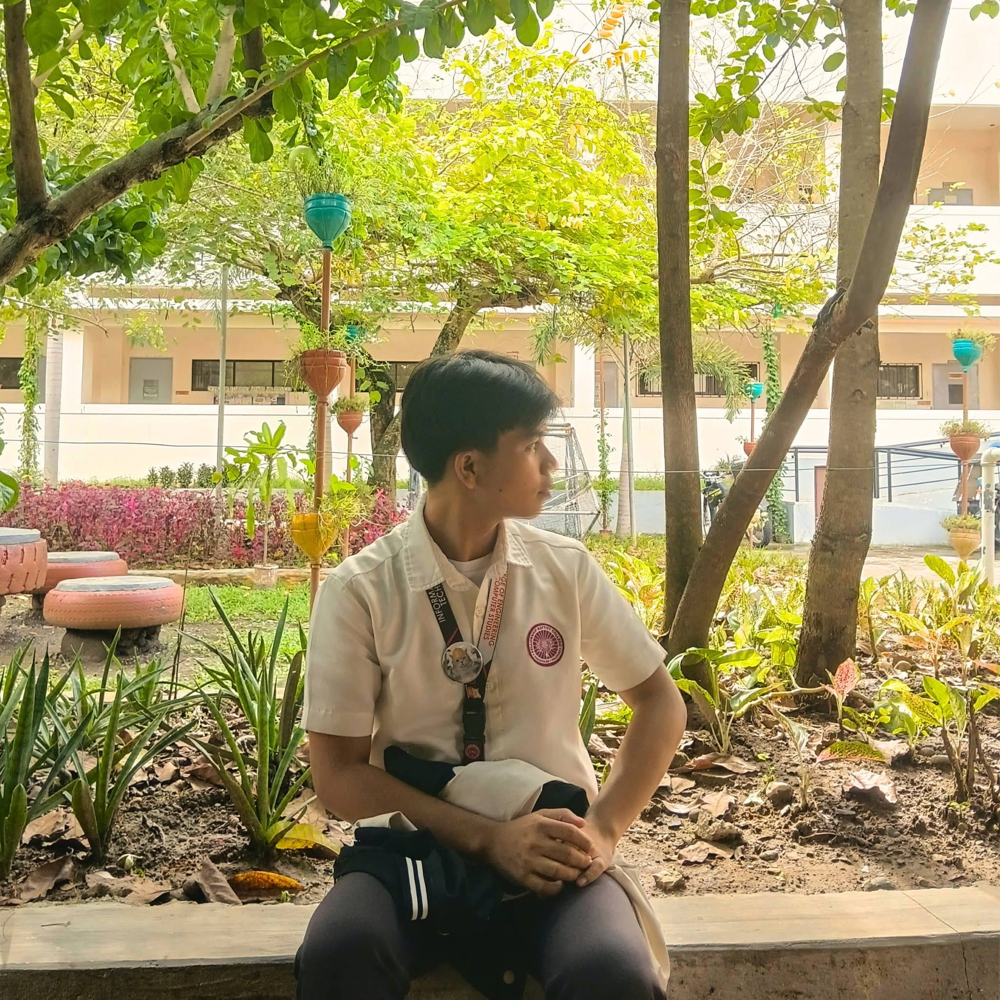

BSIT Student | Web Developer
Hello, I'm Justin Ramos.
Building ideas through technology.
I'm an Information Technology student passionate about web development, databases, technology, and creative digital projects. I enjoy learning new skills and building useful digital solutions.
Explore My Projects Contact Me
Justin Ramos
BS Information Technology Student
Web Development | Creative Technology
About Me
I am an IT student interested in programming, database management, networking, and web development. My goal is to continue improving my technical skills through academic projects and hands-on experience.
My Skills
- HTML and CSS
- Python Programming
- Database Management
- Networking Fundamentals
- Web Development
My Projects
I build academic and personal projects involving web development, databases, and technology.
Contact Me
Interested in my work? You can contact me through my professional social profiles.
Visit My GitHub